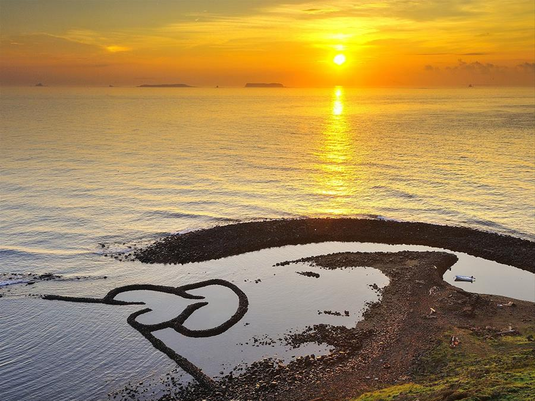
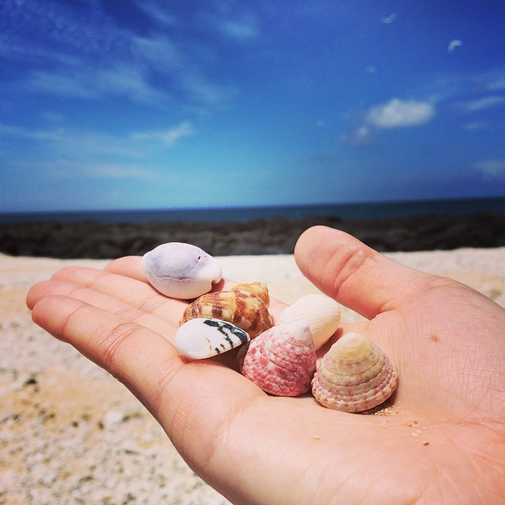
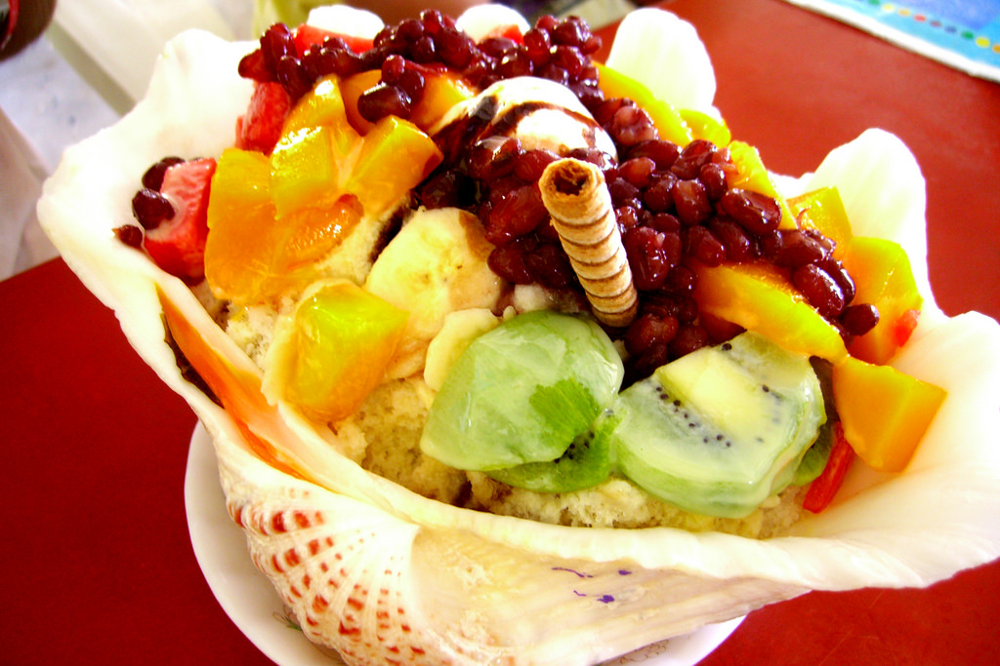
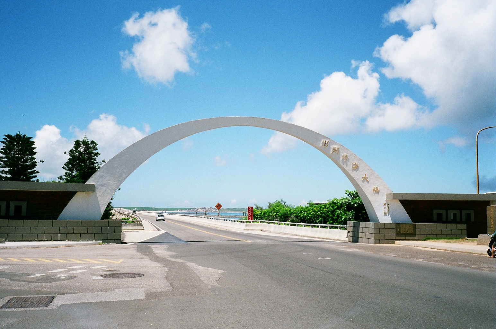
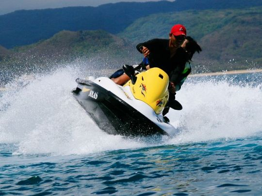

澎湖之旅
雙心石滬位於七美鄉的東北角，東湖村頂隙北面的海崖下，也有人將他稱之為頂隙滬。其精緻令人遐想的雙心造型，可是被喻為地球上最美的石滬呢,這是我在接近黃昏時所拍下的澎湖雙心石滬,也是當地知名的地標 。
這是在澎湖吉貝島所拍下的,當地最有名的就是吉貝的貝殼
而且還有很多店家也賣起了貝殼冰唷!真的是用貝殼裝的!
這是澎湖跨海大橋連接澎湖群島之中的兩大島，白沙島與西嶼島，是澎湖群島主要交通要道之一。
我還去玩了當地有名的香蕉船,就是他的船造型顧名思義像香蕉,玩法是到快靠岸時船會翻覆,因為有穿救身衣,所以不會太危險

這也是水上活動之一,水上摩特車,超級刺激又好玩
